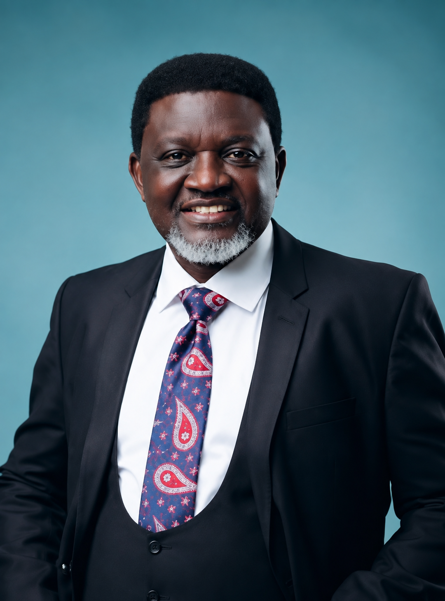

L'archevêque Charles Agyinasare (docteur en philosophie) est un apôtre des nations, un homme d'État missionnaire, un télévangéliste, un pasteur et un auteur. Il est le président d'Agyinasare World Evangelism, un ministère qui répand l'Évangile à travers le monde. Il est également le fondateur et le prélat de Perez Chapel International.
Après une vie de péché, Charles a donné sa vie à Christ, a été délivré du pouvoir du péché et, depuis lors, il est animé d'une profonde passion pour le salut des âmes et leur délivrance de l'emprise de Satan.
Suite à la mission que Dieu lui a confiée, à savoir : « Mon fils Charles, je te donne pouvoir sur les démons et les puissances, guéris les malades, ressuscite les morts et proclame le Royaume », le ministère du Dr Agyinasare se caractérise par la prédication de la parole de Dieu, simple mais authentique, accompagnée par la puissance indéniable de Dieu à travers les guérisons, les miracles et les prodiges. Il a prêché ce message dans plus de 92 pays à travers le monde.
L'archevêque Agyinasare est également le pasteur principal du Perez Dome à Accra, au Ghana, un auditorium de 14 000 places considéré comme le plus grand du pays. Ses enseignements transformateurs et ses réunions de témoignages de miracles sont diffusés quotidiennement dans plus de 16 pays africains par le biais de sa chaîne de télévision par satellite Precious TV, et dans le monde entier grâce à la diffusion en ligne de Precious TV.
Il est également chancelier de l'Université Pérez, dont le campus se situe à Gomoa-Pomadze, près de Winneba. Il est l'auteur de plus de 84 ouvrages traitant de sujets aussi variés que l'étiquette, les finances, le leadership, la sainteté, les derniers jours et le Saint-Esprit. Fort d'un ministère aux multiples facettes, il forme et transmet aujourd'hui cette même grâce à des milliers de leaders du monde entier lors de son Sommet annuel de la Puissance Surnaturelle.
Le Dr Charles est marié à la Révérende Vivian Agyinasare, cofondatrice de Perez Chapel International, où elle occupe actuellement le poste de directrice internationale des femmes et où elle exerce son ministère pastoral à ses côtés au Perez Dome. Mariés depuis plus de 37 ans, ils ont trois enfants adultes, une fille adoptive et quatre petits-enfants.